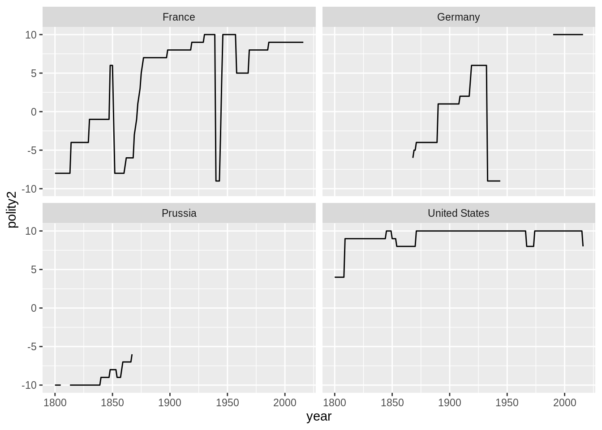

Chapter 11 Joins and Merges, Wide and Long25
Where are we? Where are we headed?
Up till now, you should have covered:
- R basic programming
- Counting.
- Visualization.
- Objects and Classes.
- Matrix algebra in R
- Functions.
Today you will work on your own, but feel free to ask a fellow classmate nearby or the instructor. The objective for this session is to get more experience using R, but in the process (a) test a prominent theory in the political science literature and (b) explore related ideas of interest to you.
11.1 Motivation
The “Democratic Peace” is one of the most widely discussed propositions in political science, covering the fields of International Relations and Comparative Politics, with insights to domestic politics of democracies (e.g. American Politics). The one-sentence idea is that democracies do not fight with each other. There have been much theoretical debate – for example in earlier work, Oneal and Russet (1999) argue that the democratic peace is not due to the hegemony of strong democracies like the U.S. and attempt to distinguish between realist and what they call Kantian propositions (e.g. democratic governance, international organizations)26.
An empirical demonstration of the democratic peace is also a good example of a Time Series Cross Sectional (or panel) dataset, where the same units (in this case countries) are observed repeatedly for multiple time periods. Experience in assembling and analyzing a TSCS dataset will prepare you for any future research in this area.
11.2 Setting up
library(dplyr)
library(tidyr)
library(readr)
library(data.table)
library(ggplot2)11.3 Create a project directory
First start a directory for this project. This can be done manually or through RStudio’s Project feature(File > New Project...)
Directories is the computer science / programming name for folders. While advice about how to structure your working directories might strike you as petty, we believe that starting from some well-tested guides will go a long way in improving the quality and efficiency of your work.
Chapter 4 of Gentzkow and Shapiro’s memo, Code and Data for the Social Scientist] provides a good template.
11.4 Data Sources
Most projects you do will start with downloading data from elsewhere. For this task, you’ll probably want to track down and download the following:
- Correlates of war dataset (COW): Find and download the Militarized Interstate Disputes (MIDs) data from the Correlates of War website: http://www.correlatesofwar.org/data-sets. Or a dyad-version on dataverse: https://dataverse.harvard.edu/dataset.xhtml?persistentId=hdl:1902.1/11489
- PRIO Data on Armed Conflict: Find and download the Uppsala Conflict Data Program (UCDP) and PRIO dyad-year data on armed conflict(https://www.prio.org) or this link to to the flat csv file (http://ucdp.uu.se/downloads/dyadic/ucdp-dyadic-171.csv).
- Polity: The Polity data can be downloaded from their website (http://www.systemicpeace.org/inscrdata.html). Look for the newest version of the time series that has the widest coverage.
11.5 Example with 2 Datasets
Let’s read in a sample dataset.
polity <- read_csv("data/input/sample_polity.csv")
mid <- read_csv("data/input/sample_mid.csv")What does polity look like?
unique(polity$country)## [1] "France" "Prussia" "Germany" "United States"ggplot(polity, aes(x = year, y = polity2)) +
facet_wrap(~ country) +
geom_line()
head(polity)## # A tibble: 6 x 5
## scode ccode country year polity2
## <chr> <dbl> <chr> <dbl> <dbl>
## 1 FRN 220 France 1800 -8
## 2 FRN 220 France 1801 -8
## 3 FRN 220 France 1802 -8
## 4 FRN 220 France 1803 -8
## 5 FRN 220 France 1804 -8
## 6 FRN 220 France 1805 -8MID is a dataset that captures a dispute for a given country and year.
mid## # A tibble: 6,132 x 5
## ccode polity_code dispute StYear EndYear
## <dbl> <chr> <dbl> <dbl> <dbl>
## 1 200 UKG 1 1902 1903
## 2 2 USA 1 1902 1903
## 3 345 YGS 1 1913 1913
## 4 300 <NA> 1 1913 1913
## 5 339 ALB 1 1946 1946
## 6 200 UKG 1 1946 1946
## 7 200 UKG 1 1951 1952
## 8 651 EGY 1 1951 1952
## 9 630 IRN 1 1856 1857
## 10 200 UKG 1 1856 1857
## # … with 6,122 more rows11.6 Loops
Notice that in the mid data, we have a start of a dispute vs. an end of a dispute.In order to combine this into the polity data, we want a way to give each of the interval years a row.
There are many ways to do this, but one is a loop. We go through one row at a time, and then for each we make a new dataset. that has year as a sequence of each year.
mid_year_by_year <- data_frame(ccode = numeric(),
year = numeric(),
dispute = numeric())## Warning: `data_frame()` is deprecated, use `tibble()`.
## This warning is displayed once per session.for(i in 1:nrow(mid)) {
x <- data_frame(ccode = mid$ccode[i], ## row i's country
year = mid$StYear[i]:mid$EndYear[i], ## sequence of years for dispute in row i
dispute = 1)
mid_year_by_year <- rbind(mid_year_by_year, x)
}
head(mid_year_by_year)## # A tibble: 6 x 3
## ccode year dispute
## <dbl> <int> <dbl>
## 1 200 1902 1
## 2 200 1903 1
## 3 2 1902 1
## 4 2 1903 1
## 5 345 1913 1
## 6 300 1913 111.7 Merging
We want to combine these two datasets by merging. Base-R has a function called merge. dplyr has several types of joins (the same thing). Those names are based on SQL syntax.

Here we can do a left_join matching rows from mid to polity. We want to keep the rows in polity that do not match in mid, and label them as non-disputes.
p_m <- left_join(polity,
distinct(mid_year_by_year),
by = c("ccode", "year"))
head(p_m)## # A tibble: 6 x 6
## scode ccode country year polity2 dispute
## <chr> <dbl> <chr> <dbl> <dbl> <dbl>
## 1 FRN 220 France 1800 -8 NA
## 2 FRN 220 France 1801 -8 NA
## 3 FRN 220 France 1802 -8 NA
## 4 FRN 220 France 1803 -8 NA
## 5 FRN 220 France 1804 -8 NA
## 6 FRN 220 France 1805 -8 NAReplace dispute = NA rows with a zero.
p_m$dispute[is.na(p_m$dispute)] <- 0long to wide
p_m_wide <- dcast(data = p_m,
formula = ccode ~ year,
value.var = "polity2")11.8 Main Project
Try building a panel that would be useful in answering the Democratic Peace Question, perhaps in these steps.
Task 1: Data Input and Standardization
Often, files we need are saved in the .xls or xlsx format. It is possible to read these files directly into R, but experience suggests that this process is slower than converting them first to .csv format and reading them in as .csv files.
readxl/readr/haven packages(https://github.com/tidyverse/tidyverse) is constantly expanding to capture more file types. In day 1, we used the package readxl, using the read_excel() function.
Task 2: Data Merging
We will use data to test a version of the Democratic Peace Thesis (DPS). Democracies are said to go to war less because the leaders who wage wars are accountable to voters who have to bear the costs of war. Are democracies less likely to engage in militarized interstate disputes?
To start, let’s download and merge some data.
- Load in the Militarized Interstate Dispute (MID) files. Militarized interstate disputes are hostile action between two formally recognized states. Examples of this would be threats to use force, threats to declare war, beginning war, fortifying a border with troops, and so on.
- Find a way to merge the Polity IV dataset and the MID data. This process can be a bit tricky.
- An advanced version of this task would be to download the dyadic form of the data and try merging that with polity.
Task 3: Tabulations and Visualization
- Calculate the mean Polity2 score by year. Plot the result. Use graphical indicators of your choosing to show where key events fall in this timeline (such as 1914, 1929, 1939, 1989, 2008). Speculate on why the behavior from 1800 to 1920 seems to be qualitatively different than behavior afterwards.
- Do the same but only among state-years that were invovled in a MID. Plot this line together with your results from 1.
- Do the same but only among state years that were not involved in a MID.
- Arrive at a tentative conclusion for how well the Democratic Peace argument seems to hold up in this dataset. Visualize this conclusion.
Module originally written by Shiro Kuriwaki, Connor Jerzak, and Yon Soo Park↩
The Kantian Peace: The Pacific Benefits of Democracy, Interdependence, and International Organizations, 1885-1992. World Politics 52(1):1-37↩